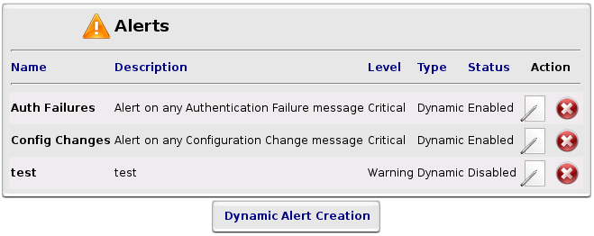
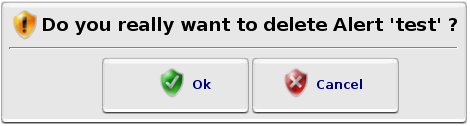
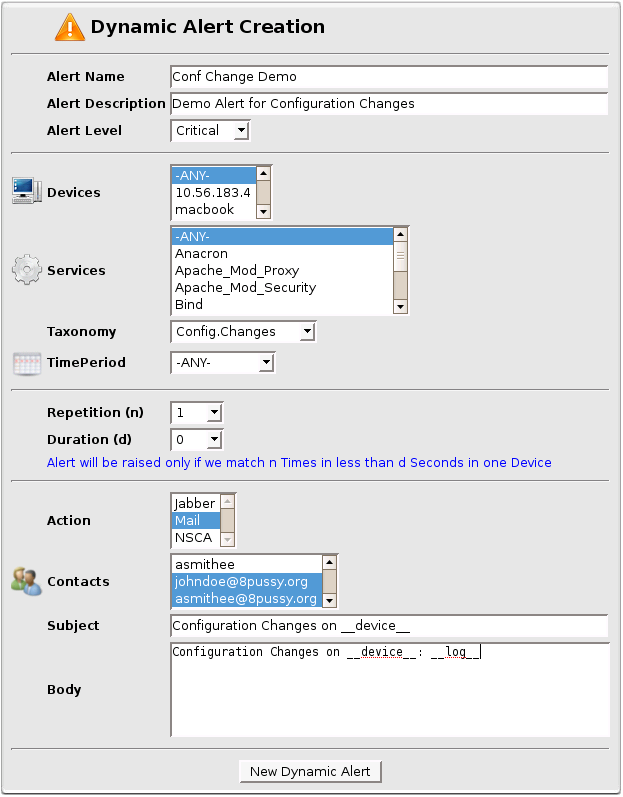

Alerts
Alerts
Here you can configure your Alerts.
On this page, you can  Edit,
Edit,  Remove or Create a new Alert by clicking on 'Dynamic Alert Creation' link.
Remove or Create a new Alert by clicking on 'Dynamic Alert Creation' link.

Alerts List
Every time you will remove an Alert, a dialog window will ask you to confirm.

Dialog Window Confirmation

Dynamic Alert Creation Box
'Alert Level' is only useful for 'Alerts Viewer'.
Alerts will be colored respectively in Orange and Red for Warning and Critical.
In 'Subject' and 'Body' fields, you can add some predefined words:
- __device.name__ or __device__ will be replaced by the device that sends log that raise this alert.
- __device.type__ will be replaced by the type of the device that sends log that raise this alert.
- __device.model__ will be replaced by the model of the device that sends log that raise this alert.
- __device.location.city__ will be replaced by the city location of the device that sends log that raise this alert.
- __device.location.building__ will be replaced by the building location of the device that sends log that raise this alert.
- __device.location.room__ will be replaced by the room location of the device that sends log that raise this alert.
- __device.location.rack__ will be replaced by the rack location of the device that sends log that raise this alert.
- __alert.name__ or __alert__ will be replaced by the alert name of this alert.
- __alert.level__ or __level__ will be replaced by the alert level of this alert.
- __log__ will be replaced by the log line that raise this alert.
- __field_fieldname__ will be replaced by the value of the field 'fieldname' of the log line.